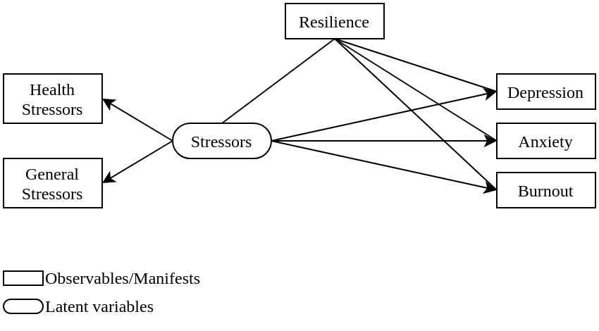

Methods
Study Design
This research employs a mixed-method approach by combining qualitative and quantitative cross-sectional design. The quantitative part of this research is a large-scale survey to measure depression, anxiety, and burnout, capture general and health-related stressors, and infer the presence of state resilience. The qualitative part of this research comprises of focus-group discussion and semi-structured in-depth interview with community leaders.
Location and Time
This research is conducted in three provinces in Indonesia, namely Jakarta, West Java, and East Java. The survey will commence from March to June 2024, while the semi-structured in-depth interview will start from June to July 2024.
Population and Sample
Research Population
Target population for this research are adults within the working-age group, i.e. adults aged between 18-64 years old. Reachable population in this research are target population in the Java island.
Research Sample
The research samples are adults aged 18-64 years old, connected to the internet, and residing in Jakarta, West Java, or East Java province.
Inclusion and Exclusion Criteria
Inclusion Criteria
- Aged 18-64 years old
- Live in Jakarta, West Java, or East Java province
- Currently employed
- If not employed, currently on layoff awaiting recall or actively looking for work
Exclusion Criteria
This study considers including all respondents to reflect the general population of adults in working-age group. No exclusion criteria is applied to preselect the participants.
Sample Size
The required sample for a survey is estimable following various methods. As proposed by Cochran (1977), two factors play an important role in determining the sample size, namely the alpha level and the acceptable level or error. Kotrlik and Higgins (2001) summarized several ways of calculating the required sample size, where equation \(\ref{eq-sample1}\) and \(\ref{eq-sample2}\) excerpted the calculation for continuous variable.
\[\begin{align} n_0 &= \frac{t^2 \cdot s^2}{d^2} \label{eq-sample1} \\ n &= \frac{n_0}{1 + \frac{n_0}{N}} \label{eq-sample2} \end{align}\]
Denoted in Equation \(\ref{eq-sample1}\), \(n\) is the estimated minimum number of samples; \(t\) is the value acquired from T distribution, where \(t\) = 1.96 when \(\alpha\) = 0.05; \(s\) is the estimated standard deviation of responses in the population; \(d\) is the acceptable margin of error mean estimation. Computing \(s\) requires dividing the number of inclusive scale in a questionnaire response by 6, the total number of deviation in a normal distribution. In case we are using a 7-point scale, the value of \(s\) would be \(\frac{7}{6}\) = 1.167. Lastly, the acceptable margin of error for mean estimation \(d\) is the product of points on scale and the acceptable margin of error, conveniently set as 7 \(\cdot\) 0.3 = 0.21. Equation \(\ref{eq-sample2}\) is rather straightforward, where the newly introduced variable is \(N\) = 10,562,088, representing the total number of population in Jakarta. Plugging in all the numbers into equation resulted in Equation \(\ref{eq-sample3}\), where the minimum number of samples should be 119.
\[\begin{align} n_0 &= \frac{1.96^2 \cdot 1.167^2}{0.21^2} \label{eq-sample3} \\ &= 118.64 \notag \\ &\approx 119 \notag \\ n &= \frac{119}{1 + \frac{119}{10,562,088}} \notag \\ &= 118.99 \notag \\ &\approx 119 \notag \end{align}\]
On the other hand, sample size is also estimable by following equation \(\ref{eq-sample4}\). In this equation, \(p\) represents the proportion of an event; \(z\) is a Z distribution corresponding to the \(\alpha\) value; \(E\) is the expected maximum error, which is conveniently agreed to 3%. Following this formula, it is possible to integrate disease prevalence as a proportion \(p\) when calculating the required sample size. According to GBD 2019 Mental Disorders Collaborators (2022), the global prevalence of depression and anxiety in 2019 was 3,440 and 3,779 per 100,000 people, respectively. Thus, the proportion for depression \(p_D\) and anxiety \(p_A\) are 0.034 and 0.038. By choosing the highest proportion, we can estimate the required sample size as indicated in Equation \(\ref{eq-sample5}\).
\[\begin{align} n &= \frac{p \cdot (1 - p) \cdot z^2}{E^2} \label{eq-sample4} \\ &= \frac{0.062 \cdot (1 - 0.062) \cdot 1.96^2}{0.03^2} \label{eq-sample5} \\ &\approx 250 \notag \end{align}\]
Having two sample size estimations, i.e. 119 and 250, the higher number of minimum sample is preferred. Initially, a pilot study according to Cohen (2013) will be commenced to acquire 250 individuals from the general population. Then, the required sample size is recalculated with Monte-Carlo simulation using the pilot data (Green and MacLeod 2016).
Data Collection
The questionnaire used in the survey is adapted from the WMH study, which employs CIDI to diagnose mental heath issues (Kessler et al. 2012). Correspondingly, this survey takes some parts of CIDI and items used in the National Comorbidity Survey to ensure that depression and anxiety closely resemble the clinical diagnostic criteria. The rationale behind collecting these data is to enable stratification based on age and sex, also calibration using depression prevalence; both are further detailed under section 1.6. The data collected through a large-scale survey are as follow:
- Screening data:1
- Age
- Sex
- Domicile
- Marital status
- Sleeping issue frequency
- Nervousness frequency
- Headache frequency
- Number of days affected by health condition
- Employment and financial status:2
- Current employment status
- Years spent working
- Industrial sector
- Job levels in the workplace
- Range of monthly income
- Range of monthly expenses
- Cause of worries:3
- Economic and material
- Children
- Marriage
- Other interpersonal issues
- Job
- Personal health
- Family’s health
- Independence
- Personal characteristics
- Community, national, or world problems
- Depression diagnostic criteria4
- Anxiety diagnostic criteria5
- Maslach’s burnout inventory
1 https://www.hcp.med.harvard.edu/ncs/ftpdir/replication/US%20Screener.pdf
2 https://www.hcp.med.harvard.edu/ncs/ftpdir/replication/US%20Employment.pdf
3 https://www.hcp.med.harvard.edu/ncs/ftpdir/replication/US%20Worries%20and%20Unhappiness.pdf
4 https://pdf.medenshealth.com/MINI-Standard.pdf
5 https://www.hcp.med.harvard.edu/ncs/ftpdir/replication/US%20GAD.pdf
A large-scale survey will be conducted online following a convenience sampling procedure. The link to access the online survey will be advertised to reach the targeted population in Jakarta, West Java, and East Java. As a part of non-probability sampling, convenience sampling is favored due to its simplicity and applicability. Although using a probability sampling method is desirable, the absence of an institutionally accessible internet panel for research purposes in Indonesia renders using probability sampling in an online survey impractical. Therefore, we establish a pseudo-panel comprised of multiple groups of heterogeneous sub-populations by adopting convenience sampling procedure. To indirectly compare the survey respondents with the general population, we match respondents’ demography data to the basic health research (riset kesehatan dasar/Riskesdas), which will allow generalizing specific sub-populations to a certain degree. A list of pseudo-panelists is selected through clustered random sampling by adjusting representativeness using population age group. The disadvantage of this approach is the inability to pre-allocate respondents into clusters, which is only possible by conducting an interim analysis during data collection.
Qualitative data will be collected through focus group discussion and semi-structured in-depth interview. Focus group discussion is intended to collect opinions from four groups, representing male and female respondents aged younger and older than 35 years old. Each focus group has 8-12 participants who will engage in a discussion led by a moderator. Meanwhile, semi-structured in-depth interview is intended to collect perspective from key-opinion leaders, including the chairman of the Indonesian Doctor Association (Ikatan Dokter Indonesia/IDI), the chairman of the Indonesian Psychological Association (Himpunan Psikologi Indonesia/HIMPSI), the chairman of the Indonesian Psychiatric Association (Perhimpunan Dokter Spesialis Kesehatan Jiwa Indonesia/PDSKJI), and the Directorate General of Public Health from the Ministry of Health of the Republic of Indonesia.
Data Processing
The acquired tabular data will be first standardized and coded as a flat text file to support an extensive compatibility with other software. The codebook of the dataset will be available as a JSON file, and serve the purpose as the complete metadata. Summarized metadata and short documentation are available as commented lines in the flat file. The complete documentation of an end-to-end data-analysis procedures are stored as an analytic pipeline in a make-like R script with a reproducibility instruction in a README file. All user-defined functions are adequately commented as a docstring and stored in a public repository to ensure transparency.
First, the data is cleaned based on completion also inclusion and exclusion criteria. Data is regarded incomplete in case of missing values, which might happen (not) at random. After checking for completion and criteria, the data is standardized based on the variables, i.e. to set a correct object type for each field. For nominal variables, the class level is defined and recorded in the metadata. For ordinal variables, the data is ordered according to its natural order. All numeric variables are treated as a float, except for time-stamp field which will be treated as a POSIX date time. Other fields are treated as a string with no particular level or order. Entry with missing values in the psychological outcome variables are discarded. All entries are grouped based on age in a 10-year interval, reflecting sub-group analysis of major depressive disorder prevalence reported in Riskesdas 2018.
Second, psychological outcomes as a dependent variable (DV) are scored. The initial scoring for all psychological outcomes are solely intended for completing the missing-value analysis. Scoring are done by summing the dimensional/factor component of an instrument, as recommended by its manual. No calculation of true score or weight-adjusted score is considered for the initial scoring. The obtained initial score will be labeled as a raw score, which provide a rough estimate of the true underlying latent score.
Third, missing data is labelled row-wise as a new variable and further analyzed. To determine the mechanism of missingness, the variable signifying missing entry is cross-tabulated with each DV and tested for statistical significance using a \(\chi^2\) test. To reduce the family-wise error rate when detecting non-random missing value generating process, Bonferroni correction is applied to the acquired p-values. If missingness happened at random, simple imputation method with central value would suffice. On the other hand, if missingness happened not at random, multiple imputation with chained equation will be performed to fill in the missing entry.
Fourth, the true score of psychological outcomes is estimated by calculating the plausible values from the factor scores. To obtain the factor score, the items from each psychometric instrument is fitted to create latent-variable models. These model are tested for its goodness of fit by evaluating the Akaike Information Criteria (AIC), Random Mean Squared Error of Approximation (RMSEA), Comparative-Fit Index (CFI), Tucker-Lewis Index (TLI), and Standardized Root Mean Squared Residual (SRMR). For a fit model, an asymptotic sampling covariance matrix is extracted from the estimated factor scores. Using 1,000 iterations, a set of values is drawn from the sampling distribution of the factor scores; the mean of drawn values are regarded as the true score.
Fifth, a sampling procedure is applied to the cleaned dataset, with the intention of preserving a realistic proportion of people affected by major depressive disorder. An online survey following convenient sampling technique is likely to suffer from participation bias, where the obtained response may not completely reflect the general population. The primary objective of this research is to assess the state resilience, hypothesized as the residuals obtained from a linear model of stressors in predicting psychological outcomes. As such, it is important to adjust the ratio of psychological outcomes to the estimated prevalence in the population. For this purpose, reports from Riskesdas in 2018 is used, where the prevalence of depression in each age groups is used as a standard reference. To perform sampling from the acquired responses, a random set of responses is drawn from the response pool while keeping the ratio of depressed-to-non-depressed subjects. The number of samples being drawn satisfies the minimum required samples in each sub-group, and the ratio of each sub-group is adjusted based on population census data. This sampling procedure is repeated with replacement for 1,000 times, and state resilience is calculated independently in each iteration.
Sixth, for each sampled subset, the score of state resilience is calculated following a recommendation by Höltge and Ungar (2022). Principal component analysis (PCA) is performed independently to a set of independent variables (IV) and DV. In this case, IV comprises general stressors and health-related stressors; while DV comprises the true scores obtained from psychometric instruments. From these two PCA models, the first principal components (\(PC\)) of IV and DV are subsequently extracted. \(PC_{IV}\) is then fitted to linear model to predict the \(PC_{DV}\), where residuals of the model will be extracted. Using residual approach to measure resilience can be misleading in case of outliers, which may skew the model and produce biased residuals. To improve model robustness, two additional steps are implemented: (1) calculate the Cook’s distance of the extracted residuals, then remove the identified outliers; and (2) use a robust correlation matrix when refitting the PCA model after removing outliers. State resilience is represented as the obtained residual, where the mean of resilience score is calculated per entry and imputed back to the original dataset.
Data Analysis
All analysis steps are performed using R version 4.3.1 (R Core Team 2023). Univariate and bivariate analyses are conducted as a part of standard exploratory data analysis procedure to explain the dataset, and not aimed to answer the hypothesis. Hypotheses are addressed in a multivariable analysis model to adjust and take into account other covariates. Qualitative findings from focus group discussion and interview will be included to enrich the discussion.
Univariate Data Analysis
Univariate analysis is conducted to describe the distribution of the variable. For all continuous variables, the value of mean, median, standard deviation, and interquartile range are calculated. For all continuous variables, the frequency and its percentage are presented.
Bivariate Data Analysis
Bivariate analysis will be conducted for a set of continuous variable with one grouping categorical variable. For each set, a pair plot will be generated to present an overview of covariance matrix, distribution plot, and median value, all grouped by the categorical variable. The categorical variables that will be considered in this analysis are age group, sex (male/female), domicile (Jakarta/West Java/East Java), and marital status (not married/married). The continuous variables are true scores of the psychological outcomes (depression, anxiety, burnout), summary of the frequency of issues from the screening data, sum of cause of worries, and state resilience. To simplify the exploratory procedure, the presence of psychological disorders will be denoted in a new variable, which only contain TRUE and FALSE. Test of proportional difference and mean difference is conducted for categorical and continuous variables after each variable is grouped by the presence any psychological disorder.
Multivariable Data Analysis
A structural equation model is used to evaluate the moderating effect of state resilience for the emergence of psychological outcomes in presence of stressors. Stressors, as an independent variable, has a direct association with psychological outcomes, as the dependent variables. State resilience will then moderate stressors and psychological outcomes, creating a tripartite relationship. The moderating effect of state resilience is modelled to covary with both IV and DV, as depicted in figure 1. RMSEA, CFI, TLI, SRMR, and R2 are measured to evaluate the goodness of fit.

Dummy Table
| Research Variable | True | False | Difference | p |
|---|---|---|---|---|
| Age: 18-30 | ||||
| Age: 31-40 | ||||
| Age: 41-50 | ||||
| Age: 51-64 | ||||
| Domicile - Jakarta | ||||
| Domicile - West Java | ||||
| Domicile - East Java | ||||
| Female | ||||
| Married | ||||
| Worriedness | ||||
| Resilience |
| Path | Non-norm. coef. | Norm. coef. | S.E. | z | p |
|---|---|---|---|---|---|
| Stressors -> Depression | |||||
| Stressors -> Anxiety | |||||
| Stressors -> Burnout | |||||
| Resilience ~~ Stressors | |||||
| Resilience ~~ Depression | |||||
| Resilience ~~ Anxiety | |||||
| Resilience ~~ Burnout | |||||
| Health stressors =~ Stressors | |||||
| General stressors =~ Stressors |